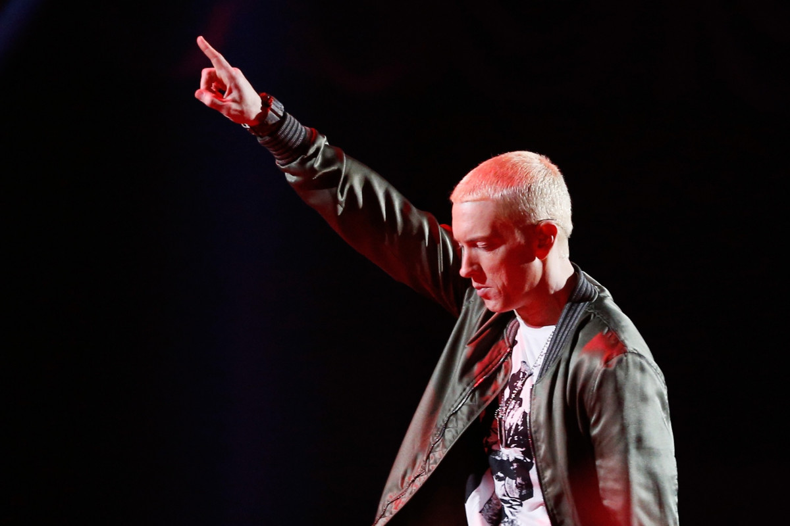

Aucun événement n'est pas prévu prochainement
Nous sommes désolé mais nous avons trouver aucun événement prochainement
Nous vous tiendrons au courant très rapidement des futures actualité.
vous retrouverez ici tous les événements passé et à venir
Nous sommes désolé mais nous avons trouver aucun événement prochainement
Nous vous tiendrons au courant très rapidement des futures actualité.
Cet Artiste de 49 ans est une véritable légende du rap. Quand on parle de cinéma, nous pouvons citer "8 Mile", sorti en 2002. Ce long-métrage qui retrace une belle partie de la vie de rappeur qu'il as pu efféctuer.
Mais voila que le que Franck Gastambide, le réalisateur de la série "Validé". Lors d'une émission sur Télématin, l'acteur et réalisateur évorqué sont envie, de travailler avec l'interprète Eminem.
source de l'article : ici